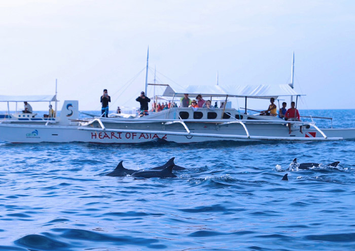

Bohol is world-famous not just for its rolling hills and interior heritage, but for its crystal-clear turquoise waters and rich marine sanctuaries. An island hopping tour is an absolute must-do for any tropical getaway, taking you across vibrant coral reefs, dolphin habitats, and pristine sand bars.
The island hopping adventure typically begins in the early morning as your motorized boat ventures out into the tranquil Bohol Sea. As the sun rises and paints the sky in shades of gold and pink, you'll get the unforgettable chance to witness pods of playful dolphins gracefully leaping and swimming alongside your boat.
Next, your captain will take you to Balicasag Island, a globally renowned marine sanctuary. Dive into the crystal-clear waters to experience world-class snorkeling. You'll swim alongside majestic sea turtles (pawikan), schools of vibrant tropical fish, and breathtaking coral gardens that thrive in this protected marine habitat.
Conclude your island adventure at Virgin Island, famous for its breathtaking crescent-shaped sand bar that emerges during low tide. Walk on powdery white sand surrounded by shallow, shimmering turquoise waters—the ultimate spot for tropical photos and fresh sea urchin tasting!
Please note that every activity and destination has respective entrance and docking fees payable on-site to help maintain and protect these natural sanctuaries:
Make sure to bring reef-safe sunscreen, waterproof bags for your electronics, drinking water, and cash for the entrance fees listed above. Booking your boat charter in advance ensures you secure the ideal boat size (Small, Medium, or Large) for your group!